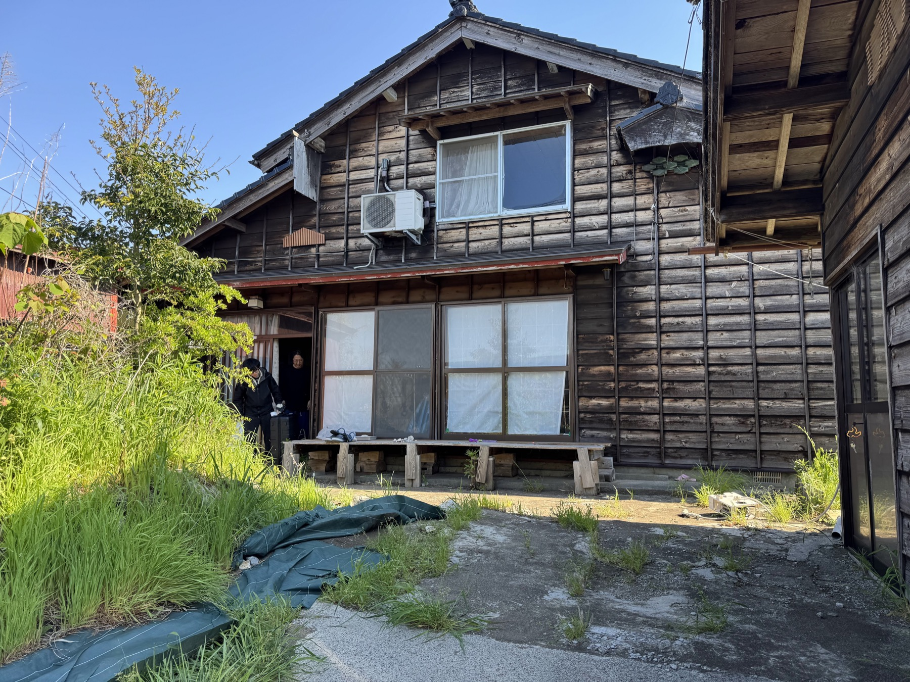
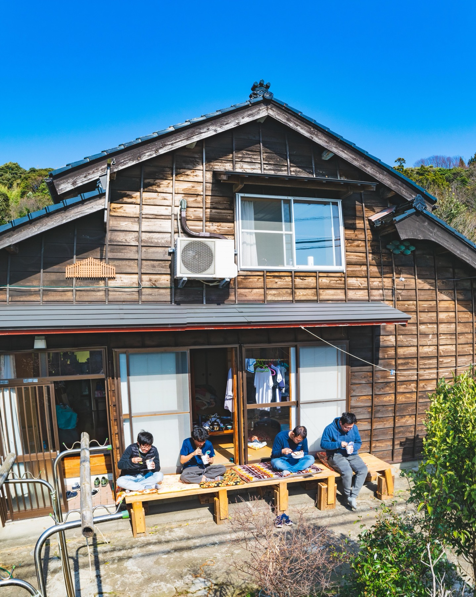
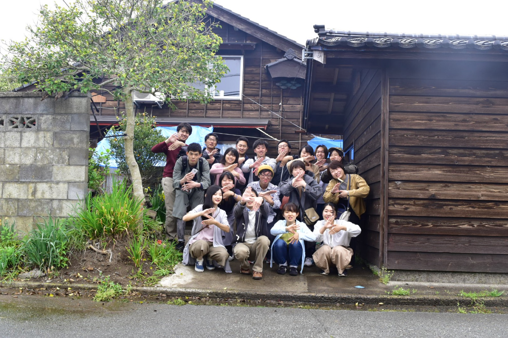

千島維持プロジェクトについて

千島projectは、佐渡島の羽茂地区にある「千島」という屋号の家を、みんなで維持していくためのプロジェクトです。
法人団体ガヤラボから場を引き継ぎ、現在は長島が中心となって維持管理をはじめています。
島を知るための門戸をこれからも開いておけるように、この場所の維持に協力してくださる協賛者を求めています。



千島projectは、佐渡島の羽茂地区にある「千島」という屋号の家を、みんなで維持していくためのプロジェクトです。
法人団体ガヤラボから場を引き継ぎ、現在は長島が中心となって維持管理をはじめています。
島を知るための門戸をこれからも開いておけるように、この場所の維持に協力してくださる協賛者を求めています。

